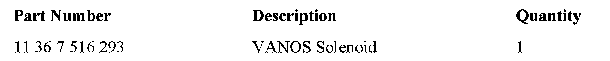
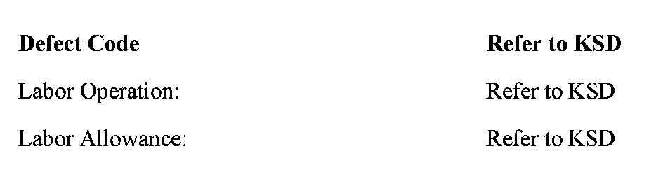

Engine - Runs Poorly With Camshaft/VANOS Codes Set
SI B 11 05 05Engine
March 2009
Technical Service
This Service Information bulletin supersedes SI B11 05 05 dated December 2006.
[NEW] designates changes to this revision
SUBJECT
N52 Engine Runs Poorly with Camshaft Sensor and VANOS Faults
MODEL
E90 (3 Series), E60 (5 Series) with N52 engine produced from 3/2005 through 6/2006
E90, E91 and E92 (3 Series) with N52KP and N54 engines from 7/2006 production
E85 and E86 (Z4) with N52 from 1/2006 production
E83 (X3) with N52 from 9/2006 production
SITUATION
Vehicles equipped with the N52, N52KP and N54 engines may be difficult to start, run rough and have the "Service Engine Soon" lamp illuminated.
Any of the following camshaft sensor or VANOS faults, as well as various misfire faults, may be stored in the DME fault memory:
^ 2A9A Cam sensor, inlet signal signal invalid for synchronization
^ 2A98 Crankshaft-inlet camshaft, correlation - Value outside reference range
^ 2A82 VANOS intake - stiff, jammed mechanically
^ 2A9B Cam sensor, exhaust signal signal invalid for synchronization
^ 2A99 Crankshaft - exhaust camshaft, correlation - Value outside reference range
^ 2A87 VANOS exhaust - stiff, jammed mechanically
CAUSE
The VANOS solenoid valve is jammed or sticking.
CORRECTION
Perform the diagnosis and repair procedure as described below.
PROCEDURE
E90 (3 Series)and E60 (5 Series) with N52 only:
Remove the VANOS solenoid, intake or exhaust, depending on the fault codes stored and, using shop air, gently blow out any visible particles and reinstall.
It is no longer necessary to replace the VANOS solenoid on the N52 engine.
Reprogram the vehicle using CIP17.01 (Target data Status E89x-05-06-510) or higher for the E90, and Target data Status E060-05-06-500 or higher for the E60.
The modified MSV70 DME data contains additional VANOS solenoid activation logic to flush out any foreign particles.
E90, E91 and E92 (3 Series) with N52KP and N54 engine and E83, E85, E86 with the N52 engine only:
Swap the faulted VANOS solenoid with the opposing solenoid to verify whether the fault follows to the opposing location. If the fault follows, replace the VANOS solenoid.

PARTS INFORMATION
WARRANTY INFORMATION

Covered under the terms of the BMW New Vehicle Limited Warranty.

Disclaimer